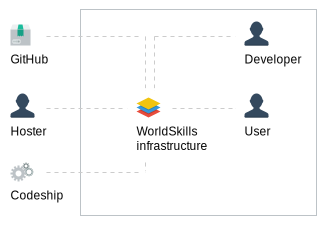
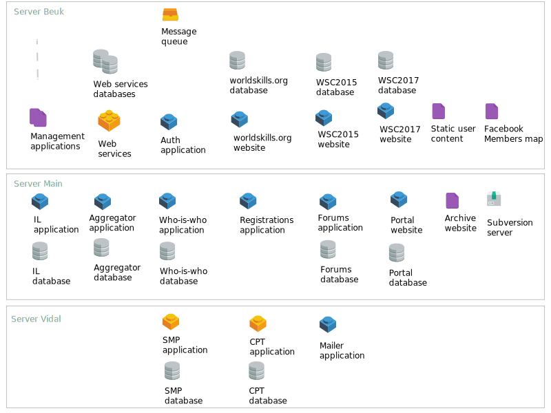
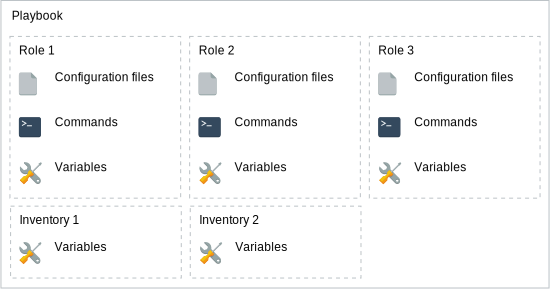
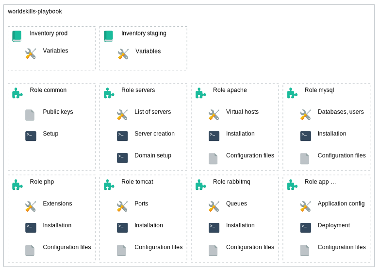
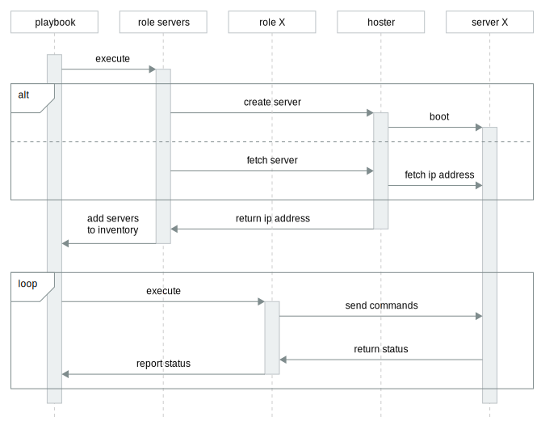
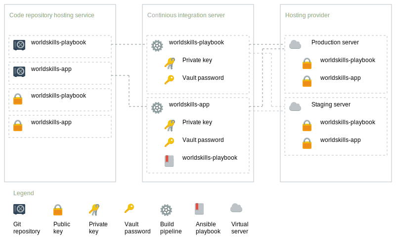

This thesis was done as part of a bachelor's degree study at ZHAW Zurich University of Applied Sciences in Zurich. The source code of this document is
available online at
https://github.com/fabian/bachelor-thesis.
This document has been written in HTML and was converted into a PDF document
with Prince XML. The font used is
Helvetica Neue, created by D. Stempel AG and based on
Helvetica by Max Miedinger.
All sources are numbered [n] and listed in the bibliography in the
appendix. Basic knowledge in computer science is required for reading and
understanding the thesis. The most important acronyms and concepts are
explained in the glossary that can be found in the appendix as well.
Abstract
Contents
Introduction
Current Situation
WorldSkills International is a non-profit membership association which organizes
a world championship in skilled professions every two years. To manage members
and to organize the preparation and execution of the competition the
organization runs multiple web applications. The mix of PHP and Java
applications consists of legacy systems and a newly developed software system
with a service-oriented architecture.
Screenshots applications
All web software is running on rented virtual servers running Linux. They are
managed manually using a web control panel (Parallels Plesk). Changes to the
infrastructure are done by one of the four internal software developers manually.
Fundamental changes like the migration to a new server or the switch to a new
runtime engine require a lot of knowledge about the existing system and manual
testing of the new installation.
Objectives
The main goal of this thesis is to develop a concept for a versioned, testable
and reproducible infrastructure. Changes to the system should be visible for
the IT team and traceable if needed. As a result knowledge is shared in written
form.
To achieve this goal, manual steps to build or change the infrastructure should
be replaced by code stored in a revision control system. Three different types
of software for provisioning of servers and deployment exist at the moment:
Software containers: all software needed to run an application is encapsulated and run in operating system-level virtualization (e.g. Docker, Rocket)
Configuration repository: A centralized repository with configuration files and software is used to configure servers (e.g. Chef, Puppet, CFEngine)
Remote command execution: Installation commands and configuration files are transmitted in a coordinated manner to a remote server (e.g. Ansible, Salt, Rex)
These types of software should be evaluated and an architecture documentation
as well as a test concept should be written. The proposed architecture should
then be tested in a proof-of-concept.
Tasks
The following tasks will be completed by the student as part of the Bachelor thesis:
Analyze infrastructure requirements
Test requirements with popular representatives for each type of provisioning software (Docker, Ansible, Chef)
Evaluate provisioning software
Write architecture documentation
Develop test concept
Implement proof-of-concept with automated provisioning and deployment
Project Management
The following gantt diagramm shows an overview of the timeline during the
project as well as the dates of the most important milestones.
February
March
April
May
June
July
Kick-Off
25.02.15 ◆
Requirements analysis
Software evaluation
Design Review
◆ XX.04.15
Architecture concept
Test concept
Proof-of-concept
Final date
31.07.15 ◆
Project schedule
Requirements
Overview
The following requirements were established by analysing the existing
infrastrucutre and taking known problems into account.
Stakeholders
The following stakeholders have been found for the current infrastructure.
They have a direct or indirect influence on the requirements. Theses
stakeholders are also used in the system context diagram.
Stakeholder
Description
Developer
Works at WorldSkills International and is responsible for the development and
maintenance of the infrastructure. There are four developers working full-time
for WorldSkills International, there is no designated system administrator.
Developers have different backgrounds and therefor different knowledge about
specific components of the instrastructure but they all share the
responsibility for keeping the infrastructure running. They work from three
different time zones.
User
Interacts with applications running on the WorldSkills infrastructure. This
includes the Secretariat, Members, Competition personnel and website visitors.
Most of them are registered users. Their expectations for fast and continuously
running services influence the requirements.
Hoster
Provides virtual Linux servers for the infrastructure. As they are in a highly
competitive and fast moving market they can become obsolete and need to be
replaced with another hoster with a better offering.
GitHub
Hosts Git code repositories for WorldSkills International. Provides a web interface
for managing permissions of the repositories. They control how code can be
accessed.
Codeship
Provides a hosted continuous integration software for WorldSkills International.
The software is based on Linux with support for PHP, Java and JavaScript
applications. Their functionality defines how applications can be built and
deployed.
Stakeholders
System Context

System context
Both Developer and User need to interact with the infrastructure or the
applications running on it. They have a direct influence on the requirements
and lie within the system context.
The source code of most applications is stored on GitHub. Codeship is used for
running automated tests and executing the deployment of new versions. The
hoster provides the servers for running the infrastrucutre. All three
vendors influence the requirements indirectly with the constraints of their
services. They are outside of the system context as they cannot be influenced.
Applications
The current infrastructure consists of multiple applications deployed on three
servers. There is no requirement to keep them on separate servers. The
following diagram gives an overview over all applications. A detailed
description of each applications follows.

System overview
The following table lists all applications and their special requirements.
Application
Description
Requirements
RabbitMQ
MySQL
JavaMail
Uploads
Web services
Java applications for managing organization information
Management
JavaScript applications for accessing the web services
Auth
PHP application for login
worldskills.org
Organization website
WSC2015 website
WorldSkills São Paulo 2015 event website
WSC2017 website
WorldSkills Abu Dhabi 2017 event website
Members map
World map with Facebook pages from other countries
IL
PHP application for managing infrastructure lists
Aggregator
PHP application which serves the mobile app content
Who-is-who
PHP application for managing organization personnel
Registrations
PHP application for registering people
Forums
Dicussion forums
Portal
Website with information about Skills and Competitors
CIS demo
Competition Information System demo
Rooms
Java application for reserving meeting rooms
Archive
Static copies of old event websites
Mailer
PHP application for sending emails to groups of people
SMP
Skill Management Plan for planning the Skill competitions
CPT
Competition Planning Timetable with important deadlines
Application requirements
User Stories
To describe the functional requirements for the new infrastructure user stories
are used. They are prioritized in agreement with all developers in three
levels: Must, Should, Could.
R01
PHP applications
Description
As a developer I want to run multiple PHP applications so users can access
them. A PHP application usually needs a MySQL database and the source code
is stored on GitHub.
Acceptance Criteria
All PHP applications are running and can be accessed with a web browser.
Priority
Must
R01 PHP applications
R02
Java applications
Description
As a developer I want to run multiple Java applications on a Tomcat server so
users and other applications can use the services provided bu the applications.
A Java application usually needs a MySQL database, the source code is stored
on GitHub.
Acceptance Criteria
All Java applications are running and can be accessed over HTTP.
Priority
Must
R02 Java applications
R03
Server configuration
Description
As a developer I want to change a server configuration file to optimize a setting.
For example the MySQL Query Cache size needs to be increased. Another example
would be that the servlet container configuration needs a new variable due to
a change in the application.
Acceptance Criteria
A configuration file get modified and the change is pushed to the repository.
The new configuration file is automatically deployed to the server and the
affected applications loads the new configuration.
Priority
Must
R03 Server configuration
R04
Application deployment
Description
As a developer I want to deploy a new version of an application so users can
benefit from new features or fixes. The deployment causes no downtime.
Acceptance Criteria
A new version of an application gets pushed to the repository. Automated tests
of the application are executed and if they pass the application gets deployed
to the server. The old version keeps responding to requests until the new
version is ready.
Priority
Should
R04 Application deployment
R05
Staging area
Description
As a developer, I want to test a new version of a web service in a staging area
so I can make sure if works as expected.
Acceptance Criteria
A new version of a web service is pushed in a separate branch, the
functionality is available for testing in a staging environment within
10 minutes from the push.
Priority
Should
R05 Staging area
R06
Hoster switch
Description
As a developer I want to switch the server hoster so I can profit from a better
offer. Another reason could be that the current hoster shuts down or its no
longer justifiable because of his actions (e.g. security problems).
Acceptance Criteria
The infrastructure can be ported to a different provider within 48 hours. All
needed software is installed automatically, databases and user files are
transfered manually.
Priority
Could
R06 Hoster switch
Non-functional requirements
The following non-functional requirements are not conclusive but they are
the most critical ones. They are classified according to quality model of
ISO/IEC 25010:2011 and prioritized in three levels: Must, Should, Could.
The requirements are based on the current infrastructure and events in the past
related to it.
R11
Configuration files
Classification
Changeability
Description
All configuration files are stored in a code repository.
Priority
Must
R11 Configuration files
R12
Change history
Classification
Accountability
Description
Every change must be traceable to a developer. Associated with every change is
an explanation.
Priority
Must
R12 Change history
R13
Open Source
Classification
Replaceability
Description
All software used for infrastructure has to be built on open-source software.
This guarantees that components can easily be ported to different providers
or maintainers. It also allows other Members to easily copy parts of the
infrastructure.
Priority
Must
R13 Open Source
R14
Test environment
Classification
Testability
Description
To test configuration changes to it, the whole or part of the infrastructure
can be started in a test environment. This is different from the staging
environment in that the test environment can be local and automated tests are
executed against it.
Priority
Must
R14 Test environment
R15
Encrypted passwords
Classification
Confidentiality
Description
Server passwords should be stored only encrypted on third-party systems. The
advantage of storing encrypted passwords in the code repository and sharing a
key file instead of sharing the passwords in a file is that the file doesn't
need to be updated for everyone each time a password is added.
Priority
Must
R15 Encrypted passwords
R16
Superuser access
Classification
Technical accessibility
Description
In case of a problem that only occurs in a certain environment, a developer
needs unrestricted access to the server to debug the error and try out
different solutions.
Priority
Must
R16 Superuser access
R17
Custom software
Classification
Interoperability
Description
New software can be installed without restrictions. New features or analytics
tools might require the installation of additional software.
Priority
Must
R17 Custom software
R18
Learning curve
Classification
Learnability
Description
How the software system to install and configure the infrastructure can be
learned quickly so all developers can make changes to the infrastructure
without spending days studying it.
Priority
Should
R18 Learning curve
R19
Horizontal scaling
Classification
Changeability
Description
Applications - that can be horizontally scaled - can be installed on multiple
servers and served through a load balancer.
Priority
Could
R19 Horizontal scaling
Evaluation
Introduction
Based on the given requirements the following evaluation defines the guiding
principles for the architecture concept. It compares the different approaches
for configuring and deploying software and how well they fit to the existing
environment.
Only specific attributes of the approaches and their software is analyzed,
many general comparisons have been written before.
Cloud solutions for managing applications exist, but are usually locked in on
the vendor and targeted at high volumes. Our scaling requirements are low as
the infrastructure needs to serve mainly the Competition and the Members and
they are both limited by other resources.
Software Containers
This type of software has recently became popular with Docker. The idea is to
use the advantages of a virtual machine (isolation, portability, efficiency)
while sharing resources. Docker has been chosen as it has been perceived as the
most active project. A similar projects is Rocket by CoreOS.
Docker only works on Linux, so for development on Mac OS X the software
Boot2Docker is used on the development laptop. Installation instructions are
provided in the Docker documentation in the
chapter Installation for Mac OS X.
After the installation the virtual machine with the Linux running Docker
is then launched with the following two commands.
$ boot2docker init
$ boot2docker start
Waiting for VM and Docker daemon to start...
.............ooo
Started.
Writing /Users/fabian/.boot2docker/certs/boot2docker-vm/ca.pem
Writing /Users/fabian/.boot2docker/certs/boot2docker-vm/cert.pem
Writing /Users/fabian/.boot2docker/certs/boot2docker-vm/key.pem
To connect the Docker client to the Docker daemon, please set:
export DOCKER_HOST=tcp://192.168.59.103:2376
export DOCKER_CERT_PATH=/Users/fabian/.boot2docker/certs/boot2docker-vm
export DOCKER_TLS_VERIFY=1
Boot2Docker initialization
Another useful tool is Docker Compose which allows multiple instances to be
started based on a configuration file. However it's usage in production is not
recommended at the moment as it's missing some features for managing managing
running instances.
R01 PHP applications
Docker publishes official images for certain applications and programming
languages in the Docker Hub Repository. There's also an official image for PHP
which can be found on GitHub. Maintained images
for recent PHP versions are provided with
built-in Apache or PHP-FPM for running the application as a service.
The easiest way to run a PHP application with Docker is to use Apache so the
application itself and static files (JavaScript, CSS, etc.) can both be served
from one process.
The MySQL server would be started in a separate instance, so an additional
Dockerfile for MySQL is needed and then needs to be linked with the container
running the PHP application. To simplify this Docker Compose can be used. It's
a tool that can start multiple Docker instances based on a configuration file.
Verdict: Pass
R02 Java applications
For Tomcat official images published are available from the Docker Hub
Repository as well. Multiple versions with for Java 7 and 8 are available.
Configuration and the application code can be copied to the working directory
of Tomcat and are read and started automatically. Multiple applications can be
bundled into one container or one container per application can be used. Again
as with PHP, a MySQL server would be started in a separate instance.
Verdict: Pass
R03 Server configuration
To guarantee reproducible containers configuration files are usually copied
into the container at build time. This allows the container to be tested in a
staging environment and making guarantees the same result in the production
environment.
Docker provides the tools to build the image and upload it to a central
repository, however it doesn't provide any tools to do an actual deployment
of the image to a live environment out of the box.
Verdict: Fail
R04 Application deployment
There are different ways how to implement this with Docker. One way would be to
build a new image, deploy it separatly and then route requests with a load
balancer to the new image. However as noted before, Docker doesn't provide
tools to do a deployment of the image nor the orchestration of running
machines.
Another possibiliy would be to use volumes to deploy the new application into
the running container but this would require each application to have built-in
support for zero downtime deployment, which is not always the case (Tomcat
supports this with parallel deployment but not PHP).
Verdict: Fail
R05 Staging area
Containers can easily be started quickly in a new environment (e.g. a new
virtual server). Docker Compose can be used here for starting up multiple
containers at once. Database fixtures can be loaded from additional containers
which are linked to the database container.
Verdict: Pass
R06 Hoster switch
Thanks to the virtualization the only requirement for a new hoster would be
to run Docker. Transfer of the data is possible by launching additional
containers on the old server and mounting the data volumes. The installation
of Docker would need to be done manually if the hoster doesn't provide
preinstalled Docker. But more importantly the configuration of the host machine
(e.g. SSH keys, logging, security settings) could not be automated with Docker.
Verdict: Fail
R11 Configuration files
All configuration files can be stored in the code repository and then added
to the container during build time.
Verdict: Pass
R12 Change history
By storing all Dockerfiles and configuration files in a VCS and building the
container images on a CI server each change can be traced back.
Verdict: Pass
R13 Open Source
Both Docker and the registry server for Docker are Open Source on GitHub,
they are licensed under the Apache License.
Verdict: Pass
R14 Test environment
As with the staging environment Docker Compose can be used for starting
multiple containers quickly so tests can be executed.
Verdict: Pass
R15 Encrypted passwords
Secret data is usually passed as environment variables to the Docker container.
Docker doesn't provide functionality for encrypting information.
Verdict: Fail
R16 Superuser access
Containers can be accessed from the outside with different methods and
superuser access to the host system is required by Docker.
Verdict: Pass
R17 Custom software
There are some limitations of what can be run inside a container on the kernel
level, but they are not affecting most use cases.
Verdict: Pass
R18 Learning curve
Immutable applications are a complex topic and Docker requires specific methods
for normal tasks.
Verdict: Fail
R19 Horizontal scaling
Multiple instances of images can be started in parallel and Docker Swarm, a
clustering tool for Docker, can be used to manage them.
Verdict: Pass
Summary Software Containers
One notable property of Software Containers is their iteration speed. Due to
the way how file changes are saved by the filesystem, setup commands don't need
to be repeated each time but the resulting files can be restored withing
seconds. This makes experimenting with the container much faster than setting
up a complete virtual machine each time.
It became clear that Docker itself is a great tool for reducing the overhead of
virtual machines, however it is not a complete solution for infrastructure
management (yet).
Advantages
Disadvantages
Active Docker community
Software can be updated for each container independently
Clear separation of concern
Can be scaled well horizontally
Fast development iterations
Added complexity
Additional virtualization layer makes debugging harder
New technology, still in development
Analysis Software Containers
A comparison of all requirements can be found after the analysis of the three
different approaches.
Configuration Repository
Chef and Puppet are the most popular representatives for this type of software.
It exists for a few years now and has the target to provide a central
repository for infrastructure configuration from which server clients regularly
pull their changes. This kind of software type usually also provides a way to
use it without a central server but that looses the advantage of having a
central point to coordinate changes.
Chef is used here because of the already existing knowledge of Ruby and its
popularity. It is usually running on a Linux machine, so for development a virtual
machine with Linux is required. To simplify the setup of the virtual machine
Vagrant (a software to run virtual machines based on a configuration file) can
be used. After installing Vagrant, a virtual machine can be started with a
Linux image provided by Chef with all required software pre-installed:
$ vagrant up
Bringing machine 'default' up with 'virtualbox' provider...
default: The Berkshelf shelf is at "/Users/fabian/.berkshelf/…"
==> default: Sharing cookbooks with VM
==> default: Importing base box 'chef/ubuntu-14.04'...
[…]
==> default: Running provisioner: chef_solo...
default: Installing Chef (latest)...
Generating chef JSON and uploading...
==> default: Running chef-solo...
==> default: stdin: is not a tty
==> default: […] INFO: Forking chef instance to converge...
==> default: […] INFO: *** Chef 12.2.1 ***
==> default: […] INFO: Chef-client pid: 2030
==> default: […] INFO: Setting the run_list to ["recipe[example-chef::default]"]
==> default: […] INFO: Run List is [recipe[example-chef::default]]
==> default: […] INFO: Run List expands to [example-chef::default]
==> default: […] INFO: Starting Chef Run for example-chef-berkshelf
==> default: […] INFO: Running start handlers
==> default: […] INFO: Start handlers complete.
==> default: […] INFO: Chef Run complete in 0.017230899 seconds
==> default: […] INFO: Skipping removal of unused files from the cache
==> default: […] INFO: Running report handlers
==> default: […] INFO: Report handlers complete
Vagrant initialization with Chef
Chef organizes commands in recipies and cookbooks
R01 PHP applications
Cookbooks for PHP are available in the
Supermarket, the official repository
for cookbooks. The PHP cookbook is published and maintained by the company
behind Chef itself.
However the functionality provided by the cookbook is mostly focused on PEAR,
which is not a requirement. A more popular alternative is the
apache2 cookbook. It not only provides the
possibility to install Apache but also mod_php to run PHP together with a web
server.
For MySQL there's an official cookbook available as well which installs and
starts a MySQL server as required.
Verdict: Pass
R02 Java applications
The Supermarket also has an official cookbook for Tomcat. Java must be
installed separately, again there's a cookbook
available in the Supermarket. The same MySQL cookbook as mention before can be
used.
Verdict: Pass
R03 Server configuration
With Chef configuration files are usually built from templates which are
stored in the repository. Once uploaded to the Chef server the client receives
them, replaces the variables in them and puts them to the targeted location.
In addition the service using the file can be restarted.
Verdict: Pass
R04 Application deployment
For Tomcat parallel deployment can be used here. The actual deployment to the
server is done using the Tomcat Manager App.
The deploy directive can be used to update a PHP application to
the latest revision without causing any downtime. It uses symlinks to make the
latest version only active when all dependencies have been installed.
Verdict: Pass
R05 Staging area
Chef can be used to setup a virtual machine with the needed environment. Once
the virtual machine with the Chef client is running it can pull all
information needed to setup the environment from the Chef server.
Verdict: Pass
R06 Hoster switch
The Chef client needs to be installed manually on a new virtual machine if the
hoster doesn't provide machines with Chef preinstalled. Once the Chef client is
installed it can install all required software and configure the machine as
needed.
Verdict: Pass
R11 Configuration files
Configuration files can be stored as templates in the repository. They get
compiled and written to their target destination by Chef.
Verdict: Pass
R12 Change history
All cookbooks and templates can be stored in a VCS, a CI server uploads them
to the Chef server for distrubution to the clients.
Verdict: Pass
R13 Open Source
Chef Client, Chef Server and Chef Development Kit (DK) are Open Source on
GitHub, they are licensed under the Apache License.
Verdict: Pass
R14 Test environment
The cookbooks can also be used to configure the virtual machine the tests are
running on.
Verdict: Pass
R15 Encrypted passwords
Data bags allow to store variables for the Chef server. Confidential
information can be stored in encrypted Data Bags. The secret key can be shared
within the developers over other secure channels.
Verdict: Pass
R16 Superuser access
No restrictions about access to the server are imposed by Chef.
Verdict: Pass
R17 Custom software
Packages from the Linux distribution are easiest to install with Chef, but
also custom software can be downloaded and installed.
Verdict: Pass
R18 Learning curve
Chef has a complex architecture and many dependencies on other libraries.
Developers not familiar with Ruby also need to learn the syntax and its
oddities first.
Verdict: Fail
R19 Horizontal scaling
Multiple Chef clients can connect to the same Chef server and the same
cookbooks can be installed on multiple hosts.
Verdict: Pass
Summary
The installation of the Chef DK was a bit troubled as it relies on overriding
rbenv in the PATH. Some modifications to
.bash_profile were needed to get it running properly.
The possibility to test the cookbooks locally inside a virtual machine with
VirtualBox proved handy. However a few times the cookbook failed unexpectetly
(e.g. because a wrong package was accidentely installed first) - a complete
reinstall then solved the problem but took quite some time.
A popular cookbook that was initially selected for deploying Java applications
turned out to be incompatible with the latest version of the official Tomcat
cookbook for no obvious reason. In general the whole system seemed complex:
many components rely on others and compability has to be figure out manually.
Advantages
Disadvantages
Can be used to manage large number of servers
Utilizes system packages
Central server as single source for configuration
Complex dependencies
Maintained server or hosted solution for Chef server needed
Complete reinstall is slow
Analysis Software Containers
Remote Command Execution
This is similar to the Configuration Repository, software to be installed and
commands to be executed are defined in text files. The main difference is that
instead of having a central server where everything is available to be pulled,
everything gets pushed to the hosts. In fact Configuration Repository software
like Chef also supports this kind of operation mode with Chef Solo.
Ansible, Salt and Rex are implementations specific for this kind of software
type. Ansible is used here because because it is only focused on this kind of
software type and because of its popularity.
Ansible is a Python application and can be installed on a development machine as
a Python package according to the
Ansible documentation. Ansible uses SSH to
communicate to remote servers and execute commands on them. Directives are
organized in playbooks and roles.
Again Vagrant can be used to simplify the setup of a remote host and test the
playbook. As Ansible requires no specific software on the host any Linux
distribution can be used within VirtualBox. The following snippet shows the
intitialization process of VirtualBox with Ansible:
$ vagrant up
Bringing machine 'default' up with 'virtualbox' provider...
==> default: Importing base box 'ubuntu/trusty32'...
[…]
==> default: Running provisioner: ansible...
[…] ansible-playbook […] site.yml
PLAY [all] ***********************************
GATHERING FACTS ******************************
ok: [default]
PLAY RECAP ***********************************
default : ok=1 changed=0
Vagrant initialization with Ansible
R01 PHP applications
Ansible includes already most tools needed for installing and configuring
software using the OS mechanisms. Examples for how to use them are provided
on GitHub by Ansible itself.
Apache and mod_php can be installed with the OS packages, their configuration
can be created with the Ansible template directive and the service directive
makes sure Apache is running. The source code of the PHP application can either
be copied to the host or cloned from Git.
MySQL can be installed and configured the same way as Apache.
Verdict: Pass
R02 Java applications
In the examples provided by Ansible they also describe how to install a
standalone instance of Tomcat. The installation package gets downloaded from the
Tomcat download server, extracted to an appropriate location, the configuration
files are created from templates and Tomcat is started as a service. MySQL can
be installed with the OS packages.
Verdict: Pass
R03 Server configuration
Configuration files can be either simply copied to the server from the local
playbook or templates with variables can be used. Ansible checks if there were
any changes in the configuration file and notifies a service to restart if
needed. The playbook can also be run from an CI server.
Verdict: Pass
R04 Application deployment
For Tomcat parallel deployment can be used here again. The actual deployment
to the server can be done using the Tomcat Manager App or by using Ansible to
copy the file to the server.
A combination of the git and file directives can be
used to checkout the latest version of the application and activate it with a
symlink as soon as all dependencies have been installed.
Verdict: Pass
R05 Staging area
As long as Ansible can connect via SSH to a machine it can set it up as needed.
Ansible can also launch new virtual machines in the cloud which is useful for
quickly starting a staging area.
Verdict: Pass
R06 Hoster switch
As mention before the only requirement on the host machine is the ability for
Ansible to connect to it. Once this is provided Ansible can setup the new
server as required. The only limitation is that Ansible differenciates between
package management systems, so switching from Apt to YUM would require some
code changes, but this switch is out of scope of this requirement.
Verdict: Pass
R11 Configuration files
All configuration files can be stored as templates or raw files in the
VCS repository of the playbook. Ansible copies them to the target server when
executed.
Verdict: Pass
R12 Change history
The playbook and all it's files can be stored in the VCS. A CI server can run
the playbook if a change has been made.
Verdict: Pass
R13 Open Source
Ansible is Open Source on GitHub and licenced under GNU General Public License
(GPL) v3.0.
Verdict: Pass
R14 Test environment
The playbook can also be executed locally to configure a test environment on
the same machine.
Verdict: Pass
R15 Encrypted passwords
Ansible provides a tool called Vault to encrypt files with variables. The
encrypted file can automatically be encrypted when running the playbook. The
password can be stored in a separate file and shared among developers.
Verdict: Pass
R16 Superuser access
Ansible doesn't restrict how the server can be accessed. In fact Ansible
requires that the server can be access using SSH which is the prefered way for
developers to access the server as well.
Verdict: Pass
R17 Custom software
Operation system packages as well as custom downloaded software can be
installed using Ansible.
Verdict: Pass
R18 Learning curve
Ansible files are easy to read and the concept can be understood quickly. Only
the YAML syntax requires a bit of learning but most examples already give a
good idea how it works.
Verdict: Pass
R19 Horizontal scaling
Ansible can connect to multiple servers and execute the defined commands there.
Servers can also be grouped by their role so that only specific commands are
executed on certain servers.
Verdict: Pass
Summary
Ansible was easy to install with pip and was instantly ready to use. Because
all servers are configured with SSH key authentication already, no
additional setup is required to make Ansible usable on them.
It is basically just a thing layer above shell scripts but provides all the
tools needed for provisioning and maintaining a server (commands, services,
config files). It lacks a few advanced features for highly complex setups, but
the fact that it's easy to learn is useful in a small team with shared
responsibilities.
Advantages
Disadvantages
Few dependencies
Easy to learn
Utilizes system packages
No central server needed
Not distribution indepentent
Limited reusability of playbooks
No programming in playbooks possible
Analysis Software Containers
Conclusion
Requirement
Software Containers
Configuration Repository
Remote Command Execution
R01 PHP applications
R02 Java applications
R03 Server configuration
R04 Application deployment
R05 Staging area
R06 Hoster switch
R11 Configuration files
R12 Change history
R13 Open Source
R14 Test environment
R15 Encrypted passwords
R16 Superuser access
R17 Custom software
R18 Learning curve
R19 Horizontal scaling
Requirements comparison
Software Containers don't comply with all Must requirements,
a Configuration Repository misses one Should requirement
(Learning curve), and Remote Command Execution matches all requirements.
Even though Software Containers don't comply with all requirements it is still
considered a useful concept if it gets combined with a Configuration
Repository or Remote Command Execution for orchestration.
The following rough estimation for introducing a software type alone or
together with Software Containers under regular workload also shows
the result of the higher complexity of a Configuration Repository compared with
Remote Command Execution.
Training
Setup
Migration
Total
Configuration Repository
4 weeks
7 weeks
3 weeks
14 weeks
Configuration Repository with
Software Containers
6 weeks
10 weeks
5 weeks
21 weeks
Remote Command Execution
2 weeks
4 weeks
2 weeks
8 weeks
Remote Command Execution with
Software Containers
5 weeks
8 weeks
5 weeks
18 weeks
Estimation introduction time
The introduction of an orchestration software together with Software Containers
could be divided into two phases. In the first phase the
orchestration could be set up with a Configuration Repository or Remote Command
Execution for the existing infrastructure. In a second phase new applications
which fit into the model of Software Containers could be adapted to those.
Phase 1
Phase 2
Month 1
Month 2
Month 3
Month 4
Month 5
Training Orchestration
Setup Orchestration
Migration Orchestration
Training Software Containers
Setup Software Containers
Migration Software Containers
Project schedule
Software Containers add additional complexity and their advantages are not
urgently needed for a team of four developers. One of them being able to
quickly setting up a development environment, which is not as important as
no new developers are expected to join the team within the next four years.
The initial concept will focus only on phase one based on the requirements
and the time available.
The evaluation has shown that Remote Command Execution
is easier to understand and maintain than a Configuration Repository.
Understanding the system easily is crucial as all
developers need to be able to make quick changes to the infrastructure. Based on
this the infrastructure concept will use Remote Command Execution software
(Ansible) to describe phase one mentioned above.
Concept
Introduction
The following concept is based on the arc42 template, which provides a
guideline for documenting software architecture. Goals, constraints and the
scope (requirements related information) have already been documented in the
previous chapters. For easier understanding some core concepts of Ansible are
outlined in this introduction.

Playbook structure
Ansible uses the term playbook to describe the collective of
configuration files, deployment instructions, and environment
specific variables. Each playbook can have multiple roles which allow
modular grouping of related files. Best practices how to organize playbooks and
roles are provided in the Ansible documentation.
A playbook can also be described as a better structured shell script that tells
the server which commands to execute in which order. Before the commands are
executed however, it checks if the command is still required or if it is
redundant. For configuration files it can check if the file needs to be updated
by comparing the desired content to the actual content on the server.
The YAML syntax is used in playbooks for
defining variables and commands to execute. The following is an example of a
file for setting up a webserver.
---
- hosts: webservers
vars:
http_port: 80
max_clients: 200
remote_user: root
tasks:
- name: ensure apache is at the latest version
apt: name=apache2 state=latest
Example Ansible file
Different environment variables can be grouped in inventory files. An
inventory can contain a list of server addresses of an environment as well as
configuration variables specific to that environment.
The whole infrastructure is described in an Ansible playbook which is shared
with a Git repository on GitHub. Different services are split up into roles.
Inside the roles provisioning and deployment are separate tasks and can be
executed independently.
Changes to the infrastructure are pushed to the Git repository and then
Ansible runs on the continuous integration sytem Codeship to deploy the changes
to the servers. Confidential information like passwords and encryption keys
are stored in encrypted Ansible Vaults.
For application deployment the playbook is downloaded by the continuous
integration system of the application and the required deployment tasks
are executed with Ansible to update the application on the server.
Building Block View
This chapter explains the files and their organization within the playbook
used to maintain the WorldSkills infrastructure.
The most important parts of the playbook are the inventories and the roles,
they are displayed in the following overview diagram.

WorldSkills playbook overview
Enviroment specific variables are stored in different inventories. There are
two inventories: prod (for production) and staging (for
system tests). The actual inventory file only lists localhost, as the servers
are dynamically created. As enviroment specific variables often contain
sensitive information they are encrypted with Ansible Vault.
The role common is used to execute often used tasks like adding
public keys of all developers. Instead of hardcoding all servers in the
inventory file, they are created or fetched dynamically with the
servers role. Each software has its own role for the installation
and the setup of the configuration files. Additionally each self-developed
application has a role to define the deployment and the setup of configuration
files.
The following table show the file structure of the playbook and explains
the function for most files and folders. The role apache is used as an
example, the structure applies for all roles.
File
Description
site.yml
Main playbook file, delegate execution of commands to servers
inventories
prod
hosts
Inventory file with list of servers for production
group_vars
all
Variables for production (e.g. database password)
staging
hosts
Inventory file with list of servers for staging
group_vars
all
Variables for staging environment
roles
apache
Role for the installation and configuration of the webserver
Installation of the webserver and setup of the configuration files
templates
vhost.conf.j2
Virtual host configuration file template
Filestructure playbook
Runtime View
This view explains the dynamic aspects of the playbook execution. In particular
the creation of the dynamic inventory and how they work together with the roles
are highlighted.

Playbook execution
While running the playbook, the first role that gets executed is the
servers role. This role doesn't execute any remote commands but runs
locally to connect to the DigitalOcean API. It either creates and boots the
servers if they don't exist yet or just fetches their information. The
returned IP addresses are added to the dynamic inventory so following commands
can be executed on the servers.
Subsequently all other roles are executed. This includes setup of software and
applications. The commands are sent to the remote servers by Ansible.
Deployment View
In the bigger context the playbook is not executed manually on the developer
machine but automated on a continuous integration server.

Deployment overview
Source code is stored in Git repositories on GitHub. The playbook and each
application have all their own private repository. The continuous integration
server Codeship has a build pipeline for each Git repository. For each pipeline
Codeship has a unique private SSH key. The public keys for those private
keys can be exported from the web interface and are deployed to GitHub to
guarantee access to the source code. They are also copied to the virtual
servers to allow Ansible to connect to the servers via SSH.
Each application pipeline uses the playbook to provision the infrastructure and
then deploys the application to the targeted infrastructure. The servers
required for the production and staging environment are running with the hoster
DigitalOcean.
Design Decisions
Playbook organization
A fundamental decision of the project is how to organize and structure the
playbooks. Each application has it's own repository and allows actions to be
executed after a push.
Two variations are possible: One repository with a playbook for the
infrastrucutre and deployment, or a playbook in each application repository.
The first approach has been chosen to easily allow sharing of variables from the
infrastructure setup with application deployment.
Usage of inventories
Ansible is built to also manage legacy infrastructures with existing servers,
so the main purpose of inventories is to provide a list of servers grouped
by their function. But Ansible also has built-in server provisioners, which
allows to take the approach of an idempotent infrastructure one step further
and also create the virtual servers with Ansible as part of the playbook.
Usually inventory files in Ansible playbooks contain a list of IP addresses or
server names which belong to the infrastructure, but with the proposed concept
the only server listed in the inventory file is localhost. This is
because the servers get added to the inventory list in memory while running the
playbook. If the servers don't exist yet, they get created; if they already
exist, their IP addresses are added to the inventory.
This approach has the advantage that temporary environments (like staging) can
easily be created and existing IP addresses of existing servers don't need
to be manually maintained inside an inventory file.
Technical Risks
The following paragraphs outlines potential technical risks of the architecture
concept. The factors convenience and security are often conflicting and need to
weighted in each case.
One disadvantage of automating the server setup is that the executor needs full
administration access to the servers. In the proposed concept the continious
integration server has superuser access to all servers. This leads to two attack
scenarios: An attacker could compromise the continious integration server to
gain access to the servers. Or the attacker could compromise the source code
repository and infiltrate the server through malicious commands. Both
GitHub and
Codeship take appropriate actions to
prevent these kind of attacks.
As the staging environment is always built by syncing databases from production
the risk of data leakage increases as staging environments are often regarded as
non-critical. By treating the staging environment as confidential as the
production environment (e.g. encrypting staging passwords), incidents can be
prevented.
Testing
Ansible provides two flags when running playbooks which are particularly useful
for testing. --syntax-check validates the YAML syntax of the
playbook and can be used to discover problems early.
The flag --check runs the playbook in a special mode where a
dry run is performed. In this mode no changes are made on remote
systems, but all tasks are checked if they can be executed. Thanks to this it
can easily be checked if the playbook would run or fail (e.g. because of some
missing variables). Unfortunately this is not always possible as some modules
require some dependencies to be installed (e.g. rabbitmq_plugins).
Because of the restrictions of the check mode only the syntax check is
performed as an automated test. Further testing can be done manually in the
staging environment.
After testing is completed and the branch has been merged into the master
branch the staging environment can be removed with a separate Ansible task.
Implementation
Proof-of-concept
Test Results
Conclusions
Appendix
Bibliography
James Turnbull (2015): The Docker Book. February 2015. Version v1.5.0.
ISBN 978-0-9888202-3-4.